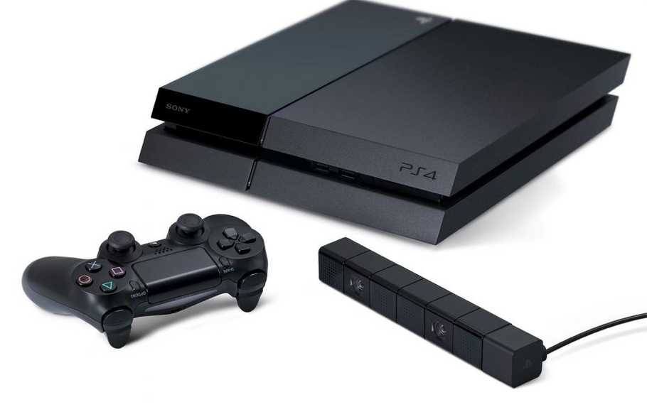

Fact
Pada 1990-an, Playstation (PS) menggemparkan industri game dunia. Pasar konsol yang selama ini didominasi Nintendo dan Sega tiba-tiba saja dirusak konstelasinya oleh PS buatan Sony.
PS punya sederet game hebat yang sampai saat ini terkadang masih dimainkan untuk bernostalgia. Ada Grand Turismo, Final Fantasy VII, Crash Bandicoot, Metal Gear Solid, dan tentu saja seri Winning Eleven.
Bulan ini PS akan berumur 20 tahun. Menandai dua dasawarsa itu, inilah 10 fakta Playstation:
1. Pada 1991, Sony mengungkapkan proyek versi baru SNES (Super Nintendo Entertainment System) yang akan memakai CD-ROM drive. Konsol baru itu bakal dinamai Playstation. Namun ditengah jalan Nintendo mundur dari kerja sama, sedangkan Presiden Sony Norio Ohga menginstrusikan agar proyek tetap berjalan. Hasilnya, lahirlah konsol yang juga dikenal dengan nama PSX.
2. Sebelumnya, Sony sudah mendiskusikan kemungkinan bekerja sama dengan Sega Amerika untuk mengembangkan konsol baru. Akan tetapi, manajer Sega Jepang enggan mempertimbangkan kerja sama itu.
3. Pada era 80an dan awal 90an, hampir semua konsol game punya joystick datar. Teiyu Goto punya ide lain. Ia merasa akan bagus jika joystick PS dibuat tiga dimensi, menyesuaikan visual game yang sudah 3D. Banyak manajer Sony yang tak setuju, namun Goto punya dukungan dari Presiden Sony karena desain itu mengingatkannya pada kemudi pesawat.
4. Goto juga meninggalkan pakem label huruf pada joystick. Ia memilih empat simbol: lingkaran, segitiga, kotak, dan x. Tombol O mewakili "ya" dan X berarti "tidak". Tapi di negara barat hal ini dibalik, maka tombol X berarti melakukan aksi.
5. PS diluncurkan pertama kali di Jepang, dibanderol 37.000 yen (memakai kurs saat ini maka harganya sekitar Rp 3,7 juta) dan hanya 100.000 unit yang didistribusikan ke 4.000 toko. Ludes dalam waktu singkat.
Selanjutnya 200.000 unit dilepas ke pasar, habis sebelum akhir bulan. Namun saat itu PS masih kalah dari Sega Saturn yang terjual 200.000 unit saat diluncurkan.